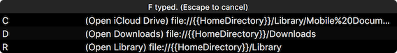

e.g.
- Launch an app, open a website, or run a script.
- Spacebar S -> launch Safari
- Spacebar N -> launch Notes
- Spacebar G -> open certain website
- Simulate a keystroke (with/without modifiers)
- Spacebar Q -> simulate F11
- Spacebar X -> simulate Control-Option-Shift-Command-A
- More keys, more actions
- Spacebar F then D -> open Documents folder
- Spacebar F then W -> open Downloads folder
- Spacebar A W E S O M E -> launch your AppleScript to say "you are awesome"
Why spacebar?
It's bigger.
How to type space?
Just type spacebar.
SpaceLauncher is smart to recognize it.
Setup

I can't memorize these
Don't memorize. Just practice. Your fingers can memorize them easily.
And, SpaceLauncher will show you a hint,
depending on your typed keys.
Moreover, only rarely used actions are highlighted (the keys used recently are grey), so you can find out the action you want quickly.
How to type a lot of spaces?
It's uncommon,
but if you really need it, hold shift and spacebar.
Stop reading, try it.
Feel safe to download. The app is signed, and the Internet connection is not required by default.
Questions and Answers
What's wrong with the hint window? Some rows are gray.
This is intended. The keys used recently will be grey. The keys never used or used several weeks ago will be white or less white depending on your last usage.
I also considered reordering the rows in hint window to show less used rows first. But I noticed if I refered to a row several times, I would expect it to appear in the same place. Reordering made me difficult to locate it.
Can I change the hint window's location and size?
Yes, you can. Holding spacebar until the hint window appears, then you drag the title bar to move window, or drag the edge to resize (height will be changed automatically depending on contents).
Can I change the hint window's appearance / theme?
No, you can not, at least not now.
I feel lack of confidence on user interface design, so I just chose the native Translucent Panels. If you think the hint window is really ugly, let me know.
Are you going to add new features?
Yes.
There are lots of features I wanted to add when I make SpaceLauncher. I had to stop myself to add new features before release. e.g.
- Support more actions
- Support app-specific actions
- Show current hot keys in menu bar extras.
- Easy to input dozens of spaces
- Easy to add new/delete actions
- Generate actions for a folder / all applications
- ...
Thanks to AppleScript, most of these can be implemented via AppleScript. But making them native in SpaceLauncher will be more user-friendly. Before that, you can try AppleScript for your customization.
Let me know what you have done with AppleScript or what you are going to do with AppleScript if I can help. And don't forget, tell me the new feature you want. You make SpaceLauncher better!
How to launch an AppleScript to say "you are awesome"
In Script Editor, type say "you are awesome", save as Application.
In SpaceLauncher, add an action to open URL, choose the AppleScript file.